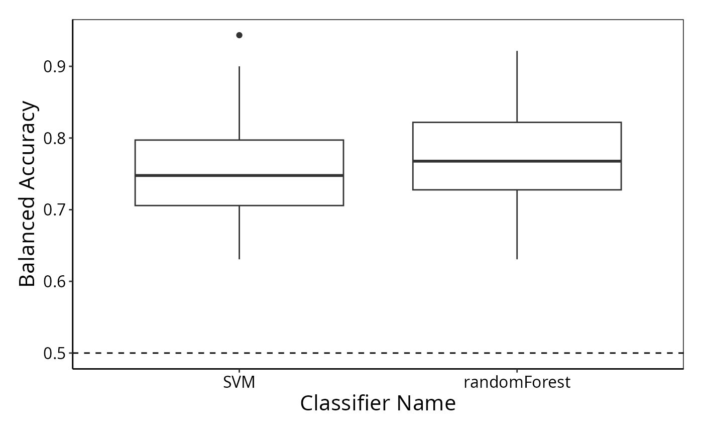

Cross-validation to evaluate classification performance.
crossValidate.RdThis function has been designed to facilitate the comparison of classification
methods using cross-validation, particularly when there are multiple assays per biological unit.
A selection of typical comparisons are implemented. The train function
is a convenience method for training on one data set and likewise predict for predicting on an
independent validation data set.
Usage
# S4 method for class 'DataFrame'
crossValidate(
measurements,
outcome,
nFeatures = 20,
selectionMethod = "auto",
selectionOptimisation = "Resubstitution",
performanceType = "auto",
classifier = "auto",
autoTune = FALSE,
multiViewMethod = "none",
assayCombinations = "all",
nFolds = 5,
nRepeats = 20,
nCores = 1,
characteristicsLabel = NULL,
extraParams = NULL,
verbose = 0
)
# S4 method for class 'MultiAssayExperimentOrList'
crossValidate(
measurements,
outcome,
nFeatures = 20,
selectionMethod = "auto",
selectionOptimisation = "Resubstitution",
performanceType = "auto",
classifier = "auto",
autoTune = FALSE,
multiViewMethod = "none",
assayCombinations = "all",
nFolds = 5,
nRepeats = 20,
nCores = 1,
characteristicsLabel = NULL,
extraParams = NULL,
verbose = 0
)
# S4 method for class 'data.frame'
crossValidate(
measurements,
outcome,
nFeatures = 20,
selectionMethod = "auto",
selectionOptimisation = "Resubstitution",
performanceType = "auto",
classifier = "auto",
autoTune = FALSE,
multiViewMethod = "none",
assayCombinations = "all",
nFolds = 5,
nRepeats = 20,
nCores = 1,
characteristicsLabel = NULL,
extraParams = NULL,
verbose = 0
)
# S4 method for class 'matrix'
crossValidate(
measurements,
outcome,
nFeatures = 20,
selectionMethod = "auto",
selectionOptimisation = "Resubstitution",
performanceType = "auto",
classifier = "auto",
autoTune = FALSE,
multiViewMethod = "none",
assayCombinations = "all",
nFolds = 5,
nRepeats = 20,
nCores = 1,
characteristicsLabel = NULL,
extraParams = NULL,
verbose = 0
)
# S3 method for class 'matrix'
train(x, outcomeTrain, ...)
# S3 method for class 'data.frame'
train(x, outcomeTrain, ...)
# S3 method for class 'DataFrame'
train(
x,
outcomeTrain,
selectionMethod = "auto",
nFeatures = 20,
classifier = "auto",
autoTune = FALSE,
performanceType = "auto",
multiViewMethod = "none",
assayIDs = "all",
extraParams = NULL,
verbose = 0,
...
)
# S3 method for class 'list'
train(x, outcomeTrain, ...)
# S3 method for class 'MultiAssayExperiment'
train(x, outcome, ...)
# S3 method for class 'trainedByClassifyR'
predict(object, newData, outcome, ...)Arguments
- measurements
Either a
DataFrame,data.frame,matrix,MultiAssayExperimentor a list of the basic tabular objects containing the data.- outcome
A vector of class labels of class
factorof the same length as the number of samples inmeasurementsor a character vector of length 1 containing the column name inmeasurementsif it is aDataFrame. Or aSurvobject or a character vector of length 2 or 3 specifying the time and event columns inmeasurementsfor survival outcome. Ifmeasurementsis aMultiAssayExperiment, the column name(s) incolData(measurements)representing the outcome. If column names of survival information, time must be in first column and event status in the second.- ...
For
trainandpredictfunctions, parameters not used by the non-DataFrame signature functions but passed into the DataFrame signature function.- nFeatures
The number of features to be used for classification. If this is a single number, the same number of features will be used for all comparisons or assays. If a numeric vector these will be optimised over using
selectionOptimisation. If a named vector with the same names of multiple assays, a different number of features will be used for each assay. If a named list of vectors, the respective number of features will be optimised over. Set to NULL or "all" if all features should be used.- selectionMethod
Default:
"auto". A character vector of feature selection methods to compare. If a named character vector with names corresponding to different assays, and performing multiview classification, the respective selection methods will be used on each assay. If"auto", t-test (two categories) / F-test (three or more categories) ranking and topnFeaturesoptimisation is done. Otherwise, the ranking method is per-feature Cox proportional hazards p-value."none"is also a valid value, meaning that no indepedent feature selection will be performed (but implicit selection might still happen with the classifier).- selectionOptimisation
A character of "Resubstitution", "Nested CV" or "none" specifying the approach used to optimise
nFeatures.- performanceType
Performance metric to optimise if classifier has any tuning parameters.
- classifier
Default:
"auto". A character vector of classification methods to compare. If a named character vector with names corresponding to different assays, and performing multiview classification, the respective classification methods will be used on each assay. If"auto", then a random forest is used for a classification task or Cox proportional hazards model for a survival task.- autoTune
Default:
FALSE. A logical value of length 1 indicating whether to perform parameter tuning on a prespecified range of values. See presets.html for the classifiers and their corresponding range of values.- multiViewMethod
Default:
"none". A character vector specifying the multiview method or data integration approach to use. Seeavailable("multiViewMethod") for possibilities.- assayCombinations
A character vector or list of character vectors proposing the assays or, in the case of a list, combination of assays to use with each element being a vector of assays to combine. Special value
"all"means all possible subsets of assays.- nFolds
A numeric specifying the number of folds to use for cross-validation.
- nRepeats
A numeric specifying the the number of repeats or permutations to use for cross-validation.
- nCores
A numeric specifying the number of cores used if the user wants to use parallelisation.
- characteristicsLabel
A character specifying an additional label for the cross-validation run.
- extraParams
A list of parameters that will be used to overwrite default settings of transformation, selection, or model-building functions or parameters which will be passed into the data cleaning function. The names of the list must be one of
"prepare","select","train","predict". To remove one of the defaults (see the article titled Parameter Tuning Presets for crossValidate and Their Customisation on the website), specify the list element to beNULL. For the valid element names in the"prepare"list, see?prepareData.- verbose
Default: 0. A number between 0 and 3 for the amount of progress messages to give. A higher number will produce more messages as more lower-level functions print messages.
- x
Same as
measurementsbut only training samples.- outcomeTrain
For the
trainfunction, either a factor vector of classes, aSurvobject, or a character string, or vector of such strings, containing column name(s) of column(s) containing either classes or time and event information about survival. If column names of survival information, time must be in first column and event status in the second.- assayIDs
A character vector for assays to train with. Special value
"all"uses all assays in the input object.- object
A fitted model or a list of such models.
- newData
For the
predictfunction, an object of typematrix,data.frameDataFrame,list(of matrices or data frames) orMultiAssayExperimentcontaining the data to make predictions with with either a fitted model created bytrainor the final model stored in aClassifyResultobject.
Value
An object of class ClassifyResult
Details
classifier can be any a keyword for any of the implemented approaches as shown by available().
selectionMethod can be a keyword for any of the implemented approaches as shown by available("selectionMethod").
multiViewMethod can be a keyword for any of the implemented approaches as shown by available("multiViewMethod").
Examples
data(asthma)
# Compare randomForest and SVM classifiers.
result <- crossValidate(measurements, classes, classifier = c("randomForest", "SVM"))
performancePlot(result)
#> Warning: Balanced Accuracy not found in all elements of results. Calculating it now.

# Compare performance of different assays.
# First make a toy example assay with multiple data types. We'll randomly assign different features to be clinical, gene or protein.
# set.seed(51773)
# measurements <- DataFrame(measurements, check.names = FALSE)
# mcols(measurements)$assay <- c(rep("clinical",20),sample(c("gene", "protein"), ncol(measurements)-20, replace = TRUE))
# mcols(measurements)$feature <- colnames(measurements)
# We'll use different nFeatures for each assay. We'll also use repeated cross-validation with 5 repeats for speed in the example.
# set.seed(51773)
#result <- crossValidate(measurements, classes, nFeatures = c(clinical = 5, gene = 20, protein = 30), classifier = "randomForest", nRepeats = 5)
# performancePlot(result)
# Merge different assays. But we will only do this for two combinations. If assayCombinations is not specified it would attempt all combinations.
# set.seed(51773)
# resultMerge <- crossValidate(measurements, classes, assayCombinations = list(c("clinical", "protein"), c("clinical", "gene")), multiViewMethod = "merge", nRepeats = 5)
# performancePlot(resultMerge)
# performancePlot(c(result, resultMerge))